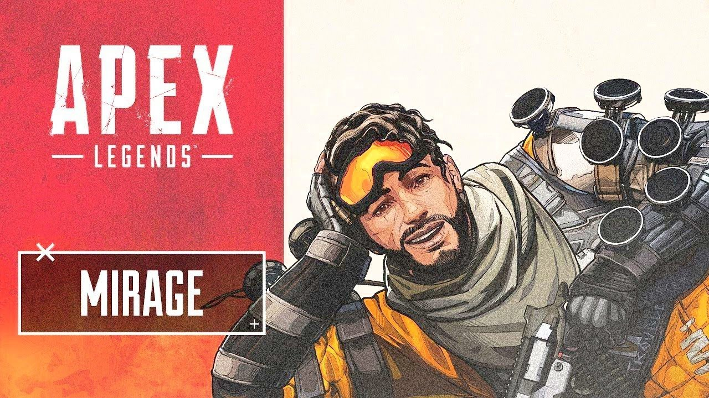
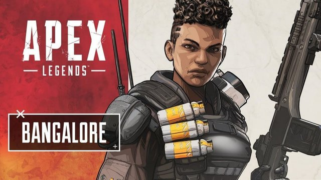
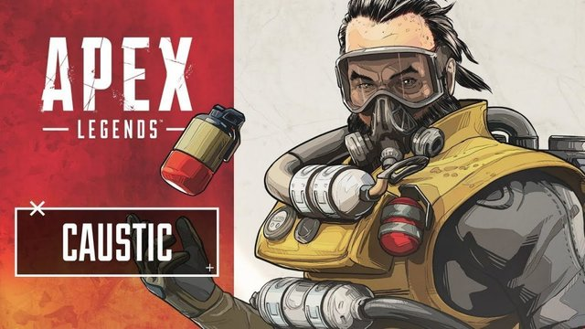
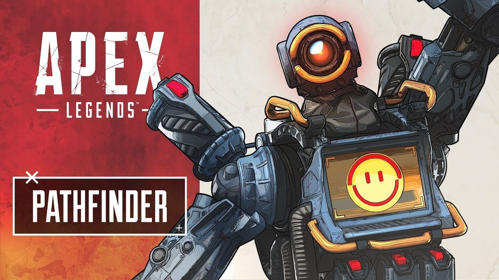
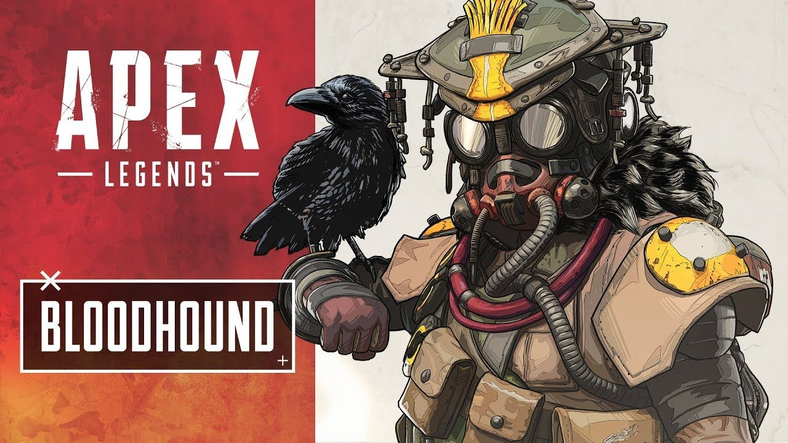
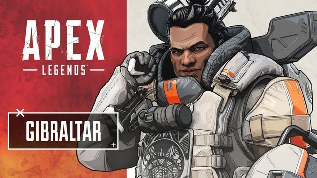
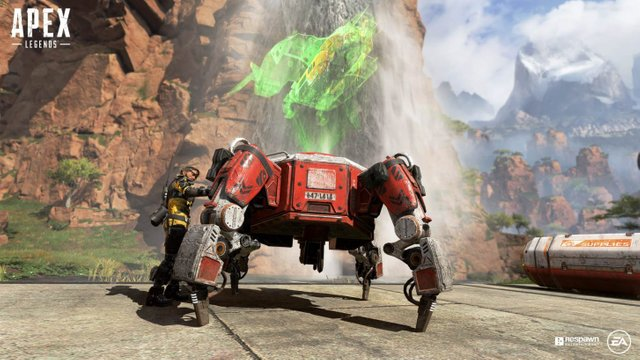
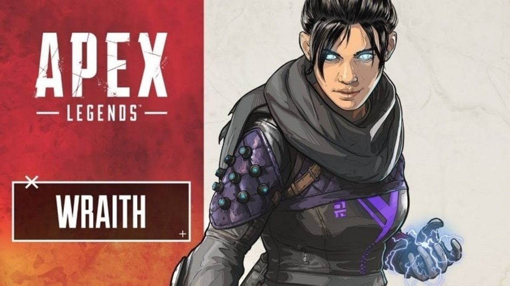
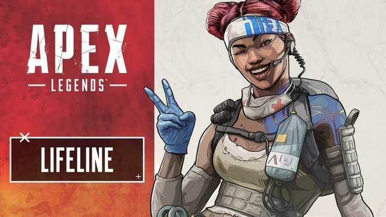

Legends
In Apex Legends, there is a roster of different heros with unique specialities. Each hero has a different abillity which can be useful in different scenarios. Here is my personal list of
Mirage
The master of decoy, Mirage can send a decoy out every 14 seconds. In addition, when downed, he turns invisible and also creates a decoy of himself. His ultimate ability turns him invisible while creating multiple copies of Mirage.
Bangalore
Bangalore moves faster when under fire, making her harder to kill while she escapes or strafes in combat. Her ultimate lets her fire two smoke grenades and her ultimate calls in an artillery strike that rolls across the map.
Caustic
Caustic is a sociopath and can place gas traps that are great for rigging rooms and fortifying choke points. His ultimate lets you throw a gas grenade that covers a large area with poison And his passive lets you see any enemies within that cloud allowing you to finish them off while they’re being slowed and disoriented.
Pathfinder
Pathfinder has a grapple that you can use to whip yourself around the map and get high ground quickly. You can even use it to pull enemies toward you for a shotgun finish. Pathfinder can hack certain beacons around the map to give you and your team intel on where the next safe circle will be and his ultimate gives him the ability to create a zipline, useful for traversing across the map.
BloodHound
Bloodhound’s passive lets you pick up on enemy cues such as footprints and if they took damage. The tactical ability sends out a pulse wave that briefly notifies you and your teammates of enemies and traps if they are in proximity. Bloodhound’s ultimate highlights enemies red, makes their footprints red, and makes the player much faster.
Gibraltar
Gibraltar is all about team support with his bubble dome that can protect while in a fight or while looting but he also has offensive abilities that work well with the flow of combat. His passive gives him a shield while aiming down sights which gives him an initial advantage in a straight up gun fight. His ultimate is a mortar strike that lasts for a long duration of time, destroying any enemy that stays in the area – unless they hide under cover of course.
Respawn Beacons 
Just because a player has been eliminated in combat, doesn't mean that they are dead for the entire match. Unlike other battle royale games, Respawn has introduced a unique recovering system that gives players 90 seconds to grab their fallen teammates banner before it expires. If you fail to retrieve this banner within the given time frame, the player will be officially eliminated from the match and willl have to spectate.
Wraith
Wraith is a soldier who uses the void for all three of her abilities. Her passive gives you extremely useful audio cues when traps are near or if enemies are aiming at you. Her tactical turns you invisible for a short period of time but you additionally become immune to all damage including the encroaching circle. Her ultimate, Dimensional Rift, allows Wraith to form two portals that either ally or foe can use to teleport across.
Lifeline
Lifeline’s passive ability gives her a shield while reviving knocked down allies. Healing items are also used 25% faster. In a game where the combat is as aggressive as it is in Apex Legends, faster healing, and shields while reviving allies allows you to mitigate some of the disadvantages you would normally encounter while being injured or outnumbered. Her tactical ability drops a drone that heals anyone on your team over time, allowing everyone to save their syringes and fight while being healed. Her ultimate takes the longest time to charge out of all the legends but that’s because it’s a care package that drops with high rarity gear including the mastiff and the kraber sniper rifle.